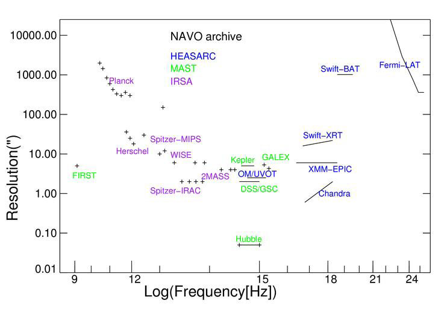

This page describes some of the ways you can use the VO interfaces of NASA's archives. You may already be using them. MAST's data portal and directory and the HEASARC's Xamin and SkyView interfaces use VO interfaces internally to access data resources. There are a myriad VO-enabled tools (DS9, TOPCAT, ALADIN, ...) to access data resources through VO interfaces. Libraries have been written to allow easy scripting of VO access, e.g. in Python (PyVO) and Python Notebooks. Support for the VOTable format which many VO interfaces return is now ubiquitous in astronomical packages.
In most cases writing software to access data through VO interfaces is straightforward. Since the protocols implemented at the different archives are the same, a user can switch from one NASA archive to another simply by changing the base URL used.
|  This figure illustrates the diversity of a few of the major datasets held by NASA. |
For most missions, the mission data is divided in temporally bounded observations. Details vary from mission to mission, but there are typically a time range, exposure, position, target, investigator, and instrument configuration associated with the observation. You can get Observation tables which provide a summary of the mission. These allow you to see if there is coverage regions and/or times of interest with the instrument characteristics you are interested in. If you really just looking to seeing if there is spatial coverage then the simple cone search protocol is all you need. Otherwise you may wish to do more sophisticated queries using the general table access protocol (TAP).
For many missions a major data product is an object catalog (or catalogs) derived from systematic analysis of the observations. The astronomer can often use the information in these catalogs without needing to reference the observations directly. Such catalogs are typical in imaging missions with reasonably high resolution. Object tables may include both observational constraints and measured values. Some missions may have multiple object catalogs reflecting difference aspects of the mission. As with the observation catalogs you can query these with either cone or TAP queries depending upon whether you need just a spatial match or have more complex search criteria.
All of the archives provide interfaces that allow users to retrieve observation images. These are the actual images associated with specific observations but may only be available for higher levels of processing. For some missions, the basic images are not taken as discrete observations but are generated in post processing. These interfaces are are currently queryable using version 1 of the simple image access protocol which supports positional queries. Upgrades to version 2 which will support more complex criteria are scheduled for the coming years.
MAST provides a spectral interface to access spectral data for spectrometer based missions and for the HST spectrometer instruments. This uses the simple spectral interface document and supports queries by position, wavelength and several other criteria. Spectral interfaces are planned at IRSA and NED.
MAST, IRSA, and the HEASARC provide many image services for specific regions of the sky or associated with specific objects. Certain regions of the sky have many specialized services associated with them. They typically do not provide access to the full mission dataset but are often more highly processed.
Other images services are direct cut-out capabilities where the user can specify a particular region of the interest and will get results of that area is in the mission coverage region. IRSA provides a standard cutout service for its imaging missions. MAST provides cutouts for several key datasets. At the HEASARC, the SkyView service provides cutout capabilities for over 100 sky datasets. NED's imaging service provides a combination of cutouts and observations associated with specific objects.
Each of the resources described above is indexed in a common registry of resources maintained at MAST. Users can search this metadata directly using the Directory service. This is used by many VO-enabled tools but users may sometimes find it useful to explore the detailed metadata associated with tables and other services.
For cone searches the query payload comprises the
three keywords RA, DEC and SR giving the ICRS right ascension, ICRS
declination and search radius, all in decimal degrees. E.g., to query
the xmmmaster HEASARC table using a cone search near 3c273 we
substitute the table name for XXXXX in the base query below and use
the RA and Dec of 3c273 and then pick a search radius appropriate for
our needs. For XMM a radius of 0.5 degrees might be sensible. So we
end with the URL:
http://heasarc.gsfc.nasa.gov/cgi-bin/vo/cone/coneGet.pl?table=xmmmaster&RA=187.25&DEC=2.05&SR=0.5
.
Another example - Retrieve basic data for Arp 220:
http://ned.ipac.caltech.edu/cgi-bin/objsearch?objname=arp+220&of=xml_main&RA=0&DEC=0&SR=0.5
.
Simple image queries have a payload of POS and
SIZE where POS is a string with the RA and Dec separated by a comma
and SIZE is the size of the region in which images are requested in
decimal degrees. The result of this query is table describing images
in the region. You can look at and parse the table to find the images
you want. One of the columns will be a URL where the image described
in that row can be downloaded.
http://irsa.ipac.caltech.edu/ibe/sia/twomass/allsky/allsky?POS=20,40&SIZE=0.5
.
To do a general SQL-like query in a table access
service you can just add /sync?REQUEST=doQuery&LANG=ADQL&QUERY=xxx
where xxx is the URI-encoded query string where most non-alphanumeric
characters are replaced by hex escapes. You can get a dump of the
entire database schema (tables and columns available) by appending
/tables to the base.
http://heasarc.gsfc.nasa.gov/xamin/vo/tap/sync?REQUEST=doQuery&LANG=ADQL&QUERY=select+*+from+xmmmaster
.
Simple spectral queries have a payload of POS and
SIZE where POS is a string with the RA and Dec separated by a comma
and SIZE is the size of the region in which spectra are requested in
decimal degrees.
http://archive.stsci.edu/ssap/search2.php?id=FUSE&pos=151.0,69.0&size=2.0
.
These interfaces support additional constraints and query modes which are discussed in the detailed protocol specifications available at the IVOA website but this can get you started.
| Service | P | N | Limits | Base URL |
|---|---|---|---|---|
| MAST/STScI | Cone | 12 | archive.stsci.edu/XXX/search.php? | |
| MAST/Kepler | Cone | 3 | archive.stsci.edu/kepler/XXX/search.php? | |
| MAST HST instruments | Cone | 9 | archive.stsci.edu/hst.php?sci_data_set_name=X*& | |
| ?? | Cone | 2 | archive.stsci.edu/spec_class/search[2].php? | |
| MAST GALEX | Cone | 1 | galex.stsci.edu/gxWS/ConeSearch/gxConeSearch.aspx? | |
| HEASARC Tables | Cone | 733 | 1,2 | heasarc.gsfc.nasa.gov/cgi-bin/vo/cone/coneGet.pl?table=XXXX& |
| HEASARC Tables | TAP | 1 | 1,2,3 | heasarc.gsfc.nasa.gov/xamin/vo/tap |
| IRSA 2MASS | Cone | 2 | irsa.ipac.caltech.edu/cgi-bin/Oasis/CatSearch/npa-catsearch?cat=fp_XXX& | |
| IRSA Tables | Cone | 385 | 5,6,9 | irsa.ipac.caltech.edu/SCS?table=XXXX& |
| NED | Cone | 1 | ned.ipac.caltech.edu/cgi-bin/NEDobjsearch?search_type=Near+Position+Search&of=xml_main& | |
| ADS | Cone | 1 | 7,8 | adsabs.harvard.edu/cgi-bin/abs_connect?data_type=VOTABLE& |
| CXC Chandra | Cone | 2 | cda.harvard.edu/XXX/coneSearch? | |
| CXC Chandra | TAP | 1 | cda.harvard.edu/cxctap | |
| Total | 1153 |
Limits:
| Service | P | N | Limits | Base URL |
|---|---|---|---|---|
| MAST GOODS | SIA | 1 | 3,4 | http://archive.stsci.edu/eidol.php? |
| MAST Image Services | SIA | 36 | 3,4 | http://archive.stsci.edu/siap/search.php?id=XXX& |
| MAST Spectra Services | SSA | 11 | 3,4 | http://archive.stsci.edu/ssap/search2.php?id=XXX& |
| MAST GALEX Spectra | SSA | 1 | 3,4 | http://galex.stsci.edu/gxWS/SSAP/gxSSAP.aspx? |
| MAST Scrapbook | SIA | 1 | 3,4 | http://archive.stsci.edu/siap/search.php?representative=y& |
| MAST EPO | SIA | 2 | 3,4 | http://archive.stsci.edu/stpr/vo_search.php? |
| MAST DSS | SIA | 4 | http://chart.stsci.edu/gscvo/DSSX.jsp? | |
| MAST GALEX | SIA | 1 | http://galex.stsci.edu/gxWS/SIAP/gxSIAP.aspx? | |
| MAST PR | SIA | 1 | http://hubblesite.org/cgi-bin/sia/hst_pr_sia.pl? | |
| MAST Hubble Legacy Archive | SIA | 1 | http://hla.stsci.edu/cgi-bin/hlaSIAP.cgi?imagetype=best&inst=ACS,ACSGrism,WFC3,WFPC2,NICMOS,NICGRISM,COS,STIS,FOS,GHRS&proprietary=false& | |
| IRSA Atlas | SIA | 59 | 1 | http://irsa.ipac.caltech.edu/cgi-bin/Atlas/nph-atlas?mission=XXX&hdr_location=YYY&SIAP_ACTIVE=1&collection_desc=ZZZ& |
| IRSA AllWISE | SIA | 1 | http://irsa.ipac.caltech.edu/ibe/sia/wise/allwise/p3am_cdd | |
| IRSA WISE AllSky | SIA | 5 | http://irsa.ipac.caltech.edu/ibe/sia/wise/allsky/XXXX? http://irsa.ipac.caltech.edu/ibe/sia/wise/cryo_3band/XXXX? http://irsa.ipac.caltech.edu/ibe/sia/wise/postcryo/2band_p1bm_frm? | |
| IRSA WISE Prelim | SIA | 3 | http://irsa.ipac.caltech.edu/ibe/sia/wise/prelim/XXX http://irsa.ipac.caltech.edu/ibe/sia/wise/prelim_postcryo/2band_p1bm_frm/xxxx | |
| IRSA Merged WISE | SIA | 2 | http://irsa.ipac.caltech.edu/ibe/sia/wise/merge/XXXX | |
| IRSA 2MASS | SIA | 5 | http//sha.ipac.caltech.edu/ibe/sia/twomass/XXX/XXXX | |
| IRSA Spitzer | SIA | 2 | http://sha.ipac.caltech.edu/applications/Spitzer/VO/VOServices?SERVICE=SIAP&DATASET=ivo://irsa.ipac/spitzer.levelX&; | |
| HEASARC SkyView General | SIA | 1 | 1 | http://skyview.gsfc.nasa.gov/cgi-bin/vo/sia.pl? |
| HEASARC SkyView Survey | SIA | 48 | 2 | http://skyview.gsfc.nasa.gov/cgi-bin/vo/sia.pl?survey=XXX& |
| HEASARC SIA | SIA | http://heasarc.gsfc.nasa.gov/xamin/vo/sia?table=XXX& | ||
| NED SIA | SIA | 1 | http://irsa.ipac.caltech.edu/cgi-bin/Atlas/nph-nedsiap?mission=NED&hdr_location=\NEDDataPath\&SIAP_ACTIVE=1&collection_desc=NASA/IPAC+Extragalactic+Database+Image+Data+Atlas+(NED)&& | |
| NED SED Service | SSA | 1 | http://vo.ned.ipac.caltech.edu/services/querySED?REQUEST=queryData& | |
| CXC Chandra | SIA | 1 | http://cda.harvard.edu/cxcsiap/queryImages? | |
| CXC Chandra Grating images | SIA | 1 | http://tgcat.mit.edu/tgSia.php? | |
| Total Count | 162 |
Limits:
| <-- Previous | Next --> |